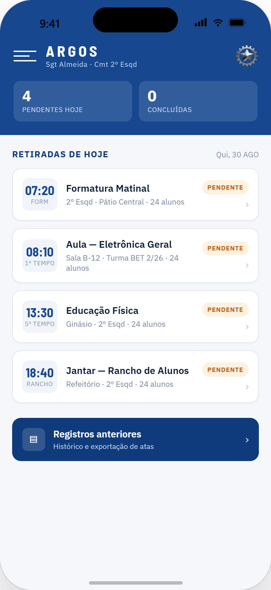
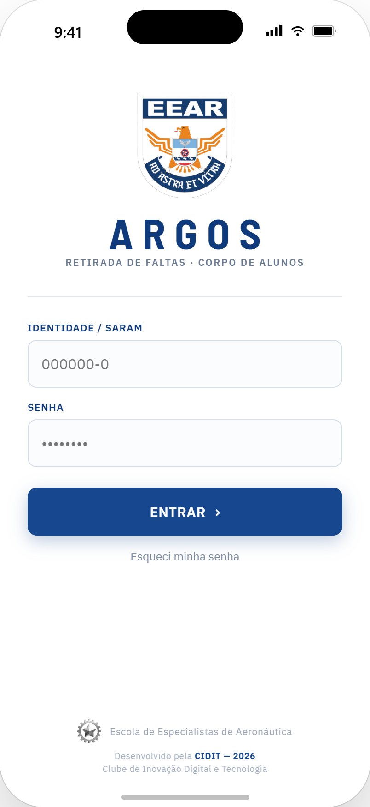

ARGS
Sistema de Retirada de Faltas · Corpo de Alunos
Vigilância contínua do efetivo: retirada de faltas digital, login por QR Code e histórico auditável de cada retirada — substituindo o controle manual por papeletas e o Livro do Aluno de Dia.

A origem do nome e o problema que resolve
Na mitologia grega, Argos Panoptes era o gigante coberto por centenas de olhos. Por nunca fechar todos ao mesmo tempo, exercia uma vigilância contínua, atenta e infalível — o projeto adota o nome como símbolo dessa vigia constante do efetivo.
Mesmo sendo reconhecida como o maior centro de formação técnica da América Latina, a EEAR ainda controla o efetivo de alunos de forma manual, por meio de Papeletas de Retirada de Faltas e do Livro do Aluno de Dia mantido em cada esquadrão. O Argos digitaliza esse controle: retirada de faltas pelo celular do próprio aluno de serviço, com histórico auditável e responsável identificado em cada retirada.
Agilidade
A retirada acontece na formatura, pelo celular do aluno de serviço, em minutos para todo o efetivo.
Confiabilidade
O registro individual por aluno elimina erro de cômputo, dupla contagem e presença lançada por terceiros.
Transparência
Cada retirada gera protocolo, responsável identificado e histórico consultável.

Tela de acesso do app. Tema claro, alto contraste, uso ao ar livre.
Três portas de entrada
Cada perfil entra pelo sistema certo pra sua função — do aluno de serviço no pátio ao comando do CA.
Área Funcional
App do aluno de serviço: login por QR Code, retirada de faltas e efetivo do esquadrão, direto do celular. Instale como aplicativo.
Acessar →Painel
Comando e encarregados do CA e dos esquadrões acompanham o efetivo, geram relatórios e o Livro do Dia.
Acessar →Ikarus37
Administração técnica: contas, chaves de API e o domínio de negócio (unidades, motivos, grupos de acesso).
Acessar →